地政学
ラパスは憲法上の首都スークレと役割を分けつつ、政府、議会、外交、抗議の現場を抱える。太平洋を失った内陸国家の記憶と、チリ、ペルー、アルゼンチン、ブラジルへ向かう高地交通が政治を帯びる都市である。今も。
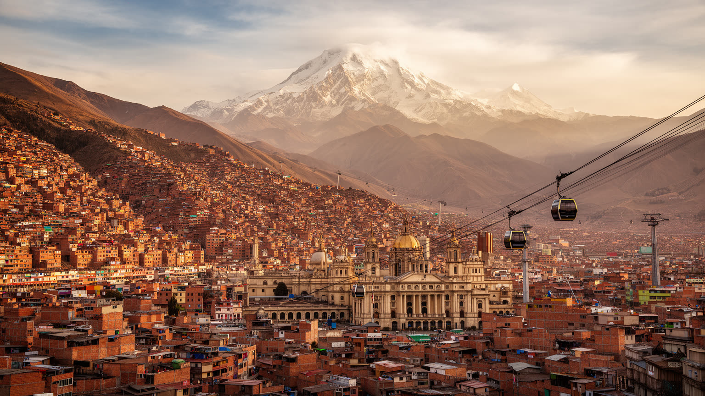
🇧🇴 ボリビア / 南アメリカ / World City Atlas
標高の高い谷底と斜面に政府機能、市場、先住民文化、ロープウェイ交通が重なる政治都市。エルアルトとの高度差、公共部門、観光、水資源、住宅の不安定さが一つの盆地で見えます。
都市の骨格
ラパスは谷底の旧市街、斜面の住宅地、上部のエルアルトが連続する高低差の都市です。政治の中心は谷にあり、人口と労働の力は高原側にも広がります。
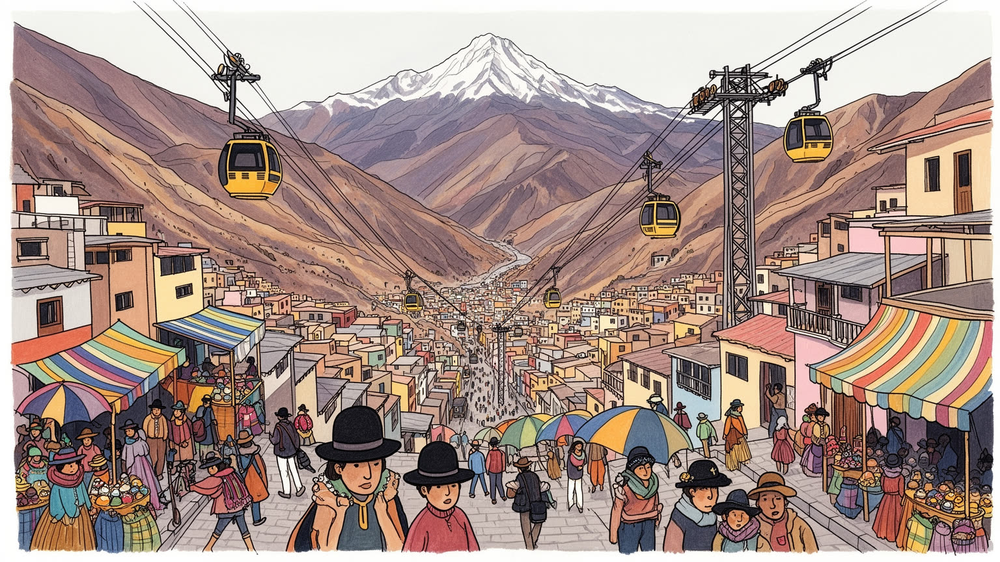
ラパスは憲法上の首都スークレと役割を分けつつ、政府、議会、外交、抗議の現場を抱える。太平洋を失った内陸国家の記憶と、チリ、ペルー、アルゼンチン、ブラジルへ向かう高地交通が政治を帯びる都市である。今も。
行政、金融、商業、観光、教育、医療が谷の雇用を作り、鉱業や農産物流通の決済も集まる。エルアルトの工房、露店、交通労働、移民の家族経済がラパスの日々を支え、公式統計に出にくい自営業も厚い都市である。
アイマラの言語、祭礼、衣装、食、民間信仰は、教会暦や国家儀礼と混ざり合う。魔女市場の供物、聖母信仰、カーニバル、チョリータの装いは観光商品である前に、都市生活の尊厳と記憶を支える軸である。深く続く。
観光客は月の谷、旧市街、ロープウェイを巡るが、住民には坂道、家賃、水不足、斜面災害、渋滞、寒暖差が日常である。眺望の美しさと生活の負荷が同じ地形から生まれる点に、この都市の読み方がある街だ。今も。
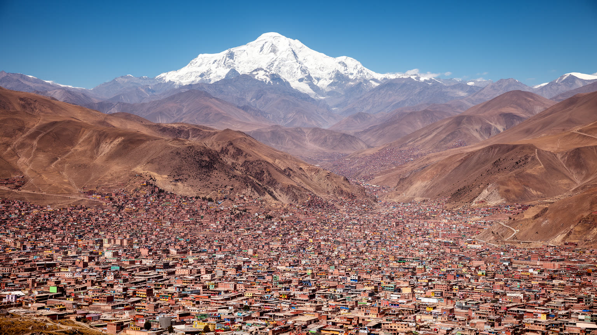
ラパスを理解する第一の手がかりは、政治や経済より先に地形である。都市はアンデスの高原に開いた深い谷へ沈み、中心部は谷底、住宅地は急な斜面、空港とエルアルトは上の平原に置かれる。標高差は眺望だけでなく、通勤時間、空気の薄さ、気温、家賃、道路勾配、災害リスクを決める。富裕層の多い南部は比較的低く温暖で、中心部は行政と商業が密集し、斜面には自力建設の住宅や市場が重なる。上部のエルアルトは別自治体でありながら、労働、交通、家族、抗議行動で谷のラパスと切り離せない。谷の下へ行くほど権力と金融に近く、上へ行くほど人口の厚みと移民の力が見えるという逆転した都市構造がある。雨季には斜面崩壊や排水の問題が表れ、乾季には水源の不安が強まる。ラパスの美しい遠景は、同時に住む場所の危うさを映す地形図でもある。さらに高度差は社会的な距離を生む。中心部で働く人が毎日長い坂や乗り換えを越え、標高の違う家へ戻ることは、身体への負担でもある。酸素の薄さ、強い日射、夜の冷え込みは、病院、学校、屋外労働、露店の営業時間まで左右する。地形を単なる景観として見るのではなく、誰が低い場所に住め、誰が斜面に押し上げられ、誰が移動費を払うのかを読むと、ラパスの都市構造がより立体的に見えてくる。この高低差は地図の線より日々の息切れとして記憶される。
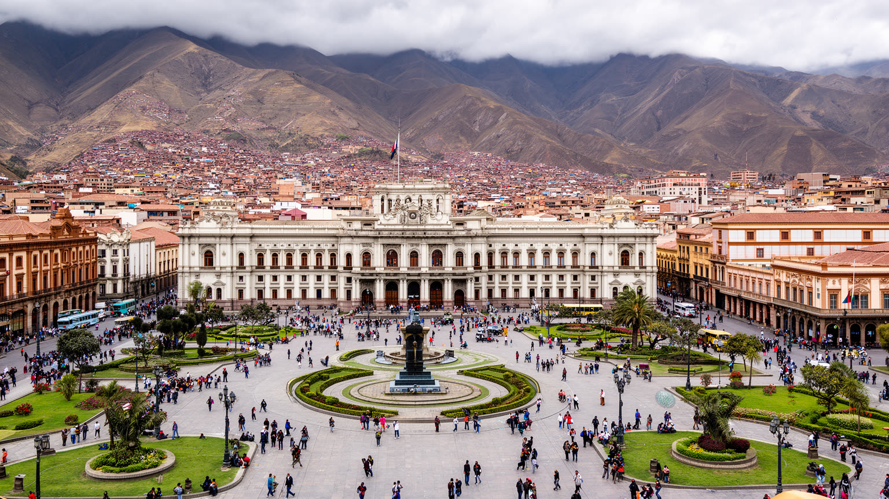
ボリビアの憲法上の首都はスークレだが、ラパスには大統領府、議会、中央官庁、外交機関、報道機関が集まり、日々の国家運営はこの谷で見える形を取る。ムリーリョ広場の周辺では、儀礼、警備、抗議、選挙、労働組合の行進が都市空間に入り込む。鉱山労働者、先住民組織、農民団体、交通業者、教員、学生が政治の当事者として街路を使い、国家の争点は会議室だけでなく坂道や広場で表現される。ラパスの権力は高層の官庁街に閉じるのではなく、市場、バスターミナル、ラジオ局、組合事務所、教会、大学へ広がる。内陸国として海への出口を失った記憶、天然資源の分配、先住民多数国としての代表性、地域間の緊張が、首都機能の集中に重なる。ラパスを歩くことは、ボリビアという国家がどこで交渉され、どこで反発され、どこで祝われるのかを読むことである。政府中枢が谷にあることは、危機のたびに交通と治安の問題にもなる。道路封鎖や行進は中心部の業務を止める一方、遠い地域の声を首都へ届かせる手段でもある。政治の緊張は迷惑な混雑としてだけでなく、代表されにくい人びとが国家へ可視化される回路として見る必要がある。ラパスでは、広場は観光名所であると同時に、権力と民衆が向き合う実務の場所であり続けている。その近さが、政治を抽象論ではなく都市の日常にしている。
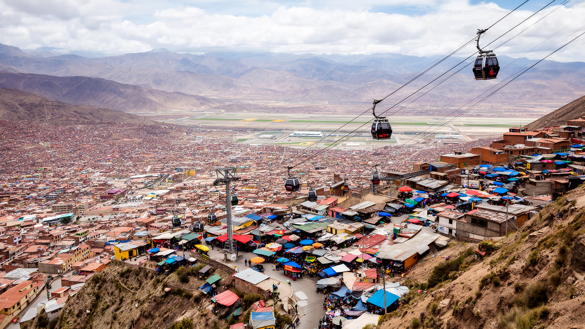
ラパスを市境だけで見ると、都市の実像を見落とす。上の平原に広がるエルアルトは別自治体であり、人口規模、空港、市場、工房、物流、アイマラ系住民の政治力を持つ巨大な都市である。谷底のラパスで働く人、売る人、学ぶ人、通院する人の多くはエルアルトや周辺自治体と行き来し、家族の生活圏は行政境界を越える。エルアルトは貧しい周辺部としてだけ語れない。そこには自営業、縫製、輸送、建設、食料流通、民間教育、祭礼、壮麗な宴会建築、地域組織があり、ボリビア政治を動かす抗議の拠点にもなってきた。ラパスの金融や官庁は谷に集中するが、その都市機能を支える労働力と社会的圧力は高原側に厚く存在する。高度差は経済差と重なる一方、上から谷を見下ろす視線は政治的な力も帯びる。ラパス都市圏を読むには、中心と周辺ではなく、谷と平原が互いに依存する一つの高地社会として見る必要がある。通勤者はロープウェイ、ミニバス、徒歩を組み合わせ、商品は市場から市場へ動き、親族は標高の違う地区に分かれて暮らす。行政が別であるため、交通、廃棄物、防災、治安、住宅政策の調整は簡単ではない。それでも生活圏はすでに一体であり、どちらか一方だけを改善しても都市全体の不平等は解けない。ラパスとエルアルトの関係は、境界線よりも毎日の移動で読むべきである。今も。
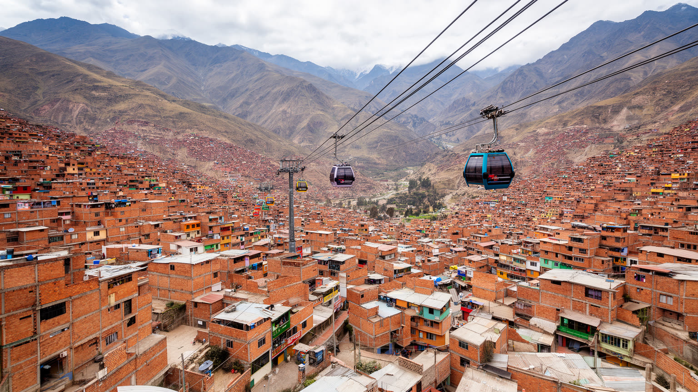
ラパスのロープウェイは観光名物である前に、地形に対する公共交通の回答である。深い谷、狭い道路、急な斜面、慢性的な渋滞は、従来のバスやミニバスだけでは処理しにくい。空中交通は谷底と斜面、ラパスとエルアルトを短時間で結び、通勤、通学、買い物、通院の経路を変えた。車窓からは、赤い屋根、未舗装の斜面、政府中枢、商業地区、富裕な南部、雪をかぶる山並みが連続して見え、都市の階層が一つの移動体験になる。もちろんロープウェイだけで移動問題が解けるわけではない。駅までの歩行環境、ミニバスとの接続、運賃負担、夜間の安全、障害者や高齢者の使いやすさが問われる。それでも、ラパスでは交通インフラが都市の見え方を変えた。道路を増やすだけでなく、三次元の移動を公共サービスとして整えた点に、この都市の独自性がある。空から都市を横断する移動は、住民にとって時間の節約であると同時に、互いの地区を見えるようにする経験でもある。観光客が眺望を楽しむ同じ車内で、学生や看護師や市場の買い手が日常の用事を済ませる。公共交通が景観を作り、景観が都市への理解を深める点で、ラパスのロープウェイは単なる技術ではなく社会的な装置である。駅前に商店が集まり、乗り換えの動線が新しい小さな中心を作る。交通政策が土地利用と生活時間を同時に変えることを、ラパスは分かりやすく示している。
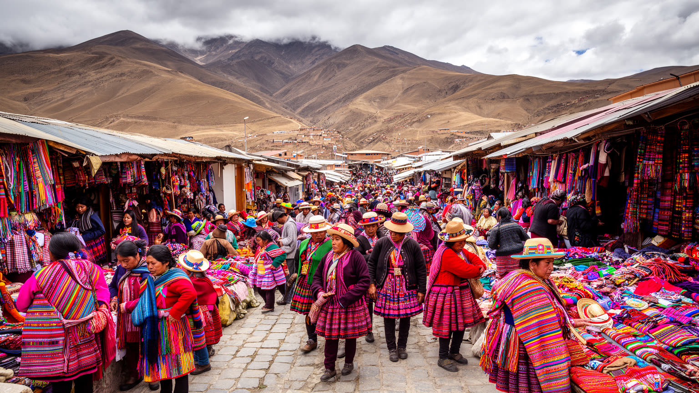
ラパスの文化は、植民地都市の教会や共和国の官庁だけでなく、アイマラを中心とする先住民の都市生活によって形作られる。チョリータの帽子、スカート、ショールは観光客の視線を集めるが、それは単なる衣装ではなく、階級、ジェンダー、商売、誇り、都市で生き抜く力の表現である。市場の売り手、祭礼の踊り手、家族経営の食堂、ラジオ、政治集会、大学へ進む若者が、先住民文化を農村の遺産ではなく現代都市の力にしている。カトリックの聖人暦、アンデスの大地への供物、死者を迎える儀礼、カーニバルの音楽は互いに混ざり、信仰は街角の商いと家族の節目に結びつく。差別の歴史は残るが、先住民性はもはや周辺の印ではない。ラパスでは、言語、服装、祭礼、政治参加が都市の中心へ入り込み、ボリビアが多民族国家であることを日常の景色として示している。この文化は固定された伝統ではなく、移住、教育、メディア、観光、政治運動を通じて変化し続ける。若い世代はスペイン語とアイマラ語、大学と家業、スマートフォンと祭礼を行き来する。伝統を守ることは過去へ戻ることではなく、都市で尊厳を持って働き、学び、装い、祈る権利を広げることでもある。観光の視線が強まるほど、誰が文化を語り、誰が利益を受け取るのかも問われる。ラパスの先住民文化は展示物ではなく、都市を運営する生きた力である。
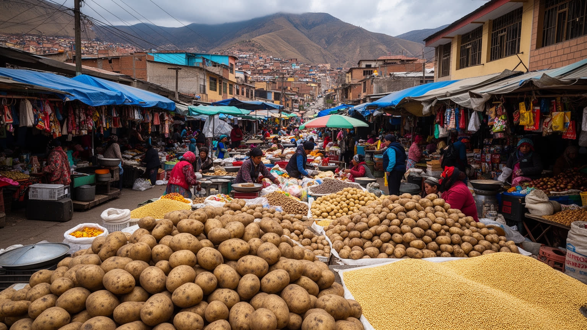
ラパスの市場は観光の背景ではなく、都市の食料、信仰、情報、信用を動かす基盤である。魔女市場では供物、ハーブ、護符が並び、観光客には珍しい品に見えても、住民にとっては家、商売、旅、健康を祈る生活の道具である。ロドリゲス市場や各地区の露店では、アルティプラノのジャガイモ、キヌア、肉、チーズ、果物、パン、温かいスープが、標高の高い日常を支える。食は寒さと労働への対応でもあり、朝の飲み物、昼の定食、屋台の揚げ物、祭礼の料理が生活の時間を区切る。市場を支えるのは女性の商人、運搬人、ミニバス、家族の手伝い、地方からの流通であり、公式な店舗経済だけでは説明できない。観光地化は収入を生む一方、信仰の道具を見世物に変える危うさもある。ラパスの市場を読むことは、消費の場所ではなく、都市が高地の農村、鉱山、信仰、家族経済と結ばれる回路を見ることである。露店の場所取り、価格交渉、顔なじみの信用、親族による仕入れは、銀行や大型店とは違う経済を作る。そこには不安定な収入、長時間労働、天候への弱さもあるが、同時に移民が都市へ入るための足場もある。市場はラパスの胃袋であり、祈りの店であり、政治情報が行き交う広場でもある。買い物は単なる消費ではなく、近所の関係を保ち、地方とのつながりを更新する行為でもある。市場を見れば、都市の生活費と信仰の距離が分かる。
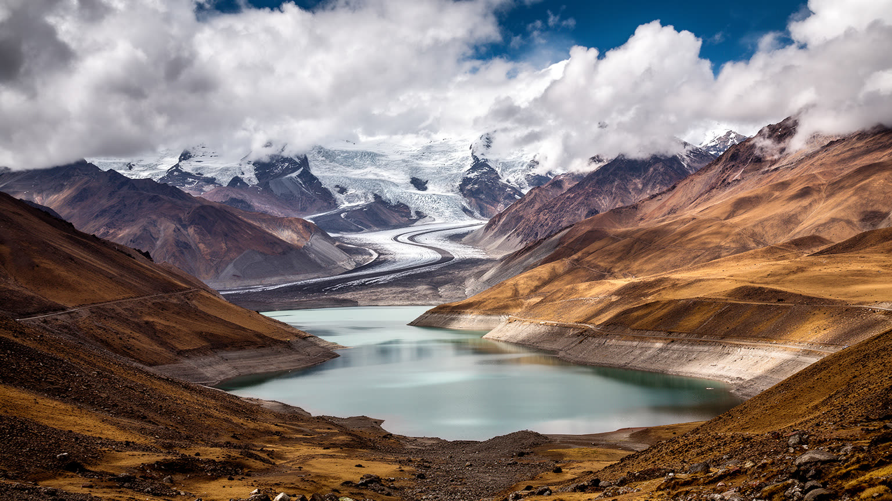
ラパスの気候は、赤道に近い位置だけでは説明できない。高い標高のため日差しは強く、朝晩は冷え、雨季と乾季の差が生活を左右する。都市の水は周辺山地の降雨、貯水池、氷河の記憶に支えられてきたが、気候変動と人口増加はその基盤を揺らしている。乾季の長期化や降雨の偏りは、家庭の断水、学校や病院の運営、洗濯、調理、衛生に直結する。斜面都市では豪雨が排水路をあふれさせ、土砂崩れや道路寸断を起こす一方、乾いた季節には粉じんと水不足が深刻になる。気候リスクは貧しい地区ほど重くのしかかる。水を買う費用、貯水する場所、漏水した配管を直す余裕、危険な斜面から移転できるかが世帯ごとに異なるからである。ラパスの環境問題は遠い自然保護ではなく、蛇口、坂道、排水溝、貯水タンク、住宅の場所に現れる都市の公平性の問題である。水道が不安定になれば、家事の負担は家庭内で偏り、学校の衛生や小規模飲食店の営業にも影響する。都市が気候に適応するには、貯水池だけでなく、漏水対策、節水教育、斜面の排水、緑地、危険住宅の移転支援を同時に進める必要がある。ラパスの水問題は、山の雪解けと台所の鍋をつなぐ問題である。高地の強い日差しは建物を温めるが、夜には急に冷えるため、住宅の断熱や暖房費も生活を左右する。気候への備えは、環境政策であると同時に貧困対策でもある。
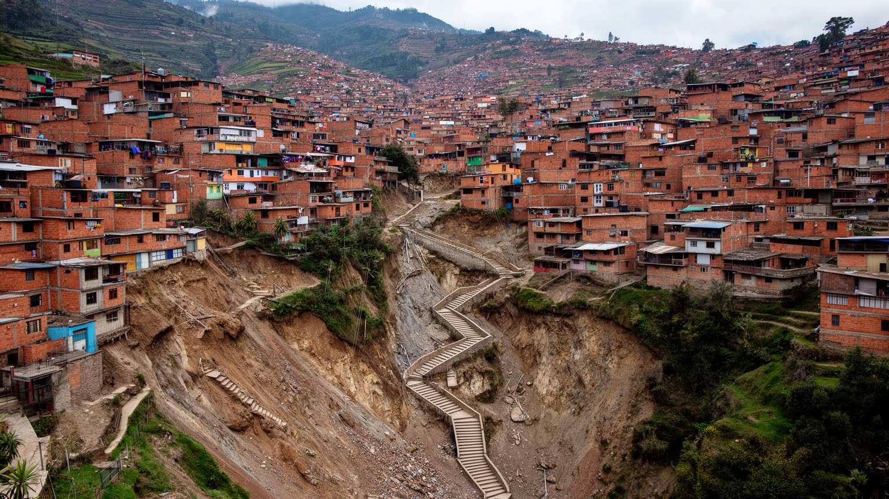
ラパスの住宅問題は、部屋の広さや家賃だけでなく、どの標高のどの斜面に住むかという問題である。谷底や南部の便利な地区は行政、学校、病院、商業に近いが、価格は高くなる。斜面上部や周辺部では土地を得やすい一方、道路、排水、公共交通、学校、医療、災害対策が不足しやすい。自力建設の住宅は家族の資産形成であり、地方から来た人が都市に根を張る方法でもあるが、土砂崩れ、地盤の不安定さ、狭い道路、消防や救急のアクセスを抱える。眺望のよい家ほど危険な斜面に近い場合もあり、写真の美しさと住まいの安全は一致しない。再開発や道路整備は生活を改善する可能性を持つが、地価上昇で住民を押し出すこともある。ラパスの都市政策では、斜面を違法や貧困の場所として切り捨てるのではなく、交通、水、排水、防災、学校を組み合わせて、住み続けられる条件を整える必要がある。住宅の安全は個人の選択だけで決まらない。土地登記、融資、建築材料、近所の互助、行政の検査、災害時の避難路がそろって初めて家は安心できる場所になる。斜面に暮らす人を危険地の住民として見るだけでは、なぜそこに住む必要があったのかが見えない。ラパスの住まいは、都市への参加と危険への露出が同時に起こる場所である。家の増築や階段の整備は、家族の成長や収入の変化を映す。斜面住宅を読むことは、都市が少しずつ作られてきた時間を読むことでもある。
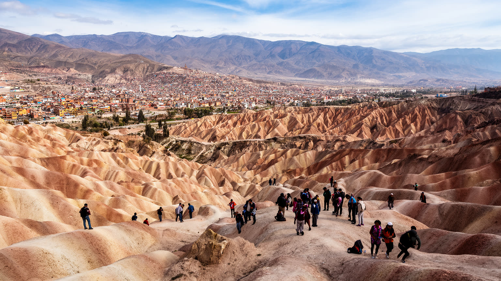
ラパス観光は、旧市街の教会や市場だけでなく、地形そのものを体験する旅になる。月の谷の侵食地形、ロープウェイから見る谷と平原、サンフランシスコ教会周辺の雑踏、ハエン通りの植民地期の記憶、南部の穏やかな住宅地は、短い移動でまったく違う都市像を見せる。さらにティワナク遺跡、チチカカ湖、ユンガス方面への入口として、ラパスは高地観光の拠点にもなる。観光は外貨と雇用を生むが、標高への適応、交通の混雑、中心部の治安、ガイドや宿泊業の労働条件、宗教的な品の消費化といった課題もある。訪問者が珍しさだけを求めると、先住民文化や貧困の景色が見世物になりやすい。ラパスを訪れる価値は、奇岩や市場を写真に収めることだけではない。高地で人がどう移動し、祈り、売買し、水を使い、斜面に住むのかを敬意を持って見ることにある。観光の動線は、住民の通勤や買い物と重なるため、混雑や価格上昇は地域生活にも影響する。良い観光は、写真を撮る場所を増やすことより、地元ガイド、手工芸、飲食店、交通労働者へ収入が届き、信仰や日常を乱しすぎない形で成り立つ必要がある。ラパスの旅は、景観を消費するだけでなく、都市への配慮を学ぶ時間でもある。高山病への注意やゆっくりした移動も、この都市を理解する一部になる。急がず標高に合わせるほど、街の細部が見えてくる。
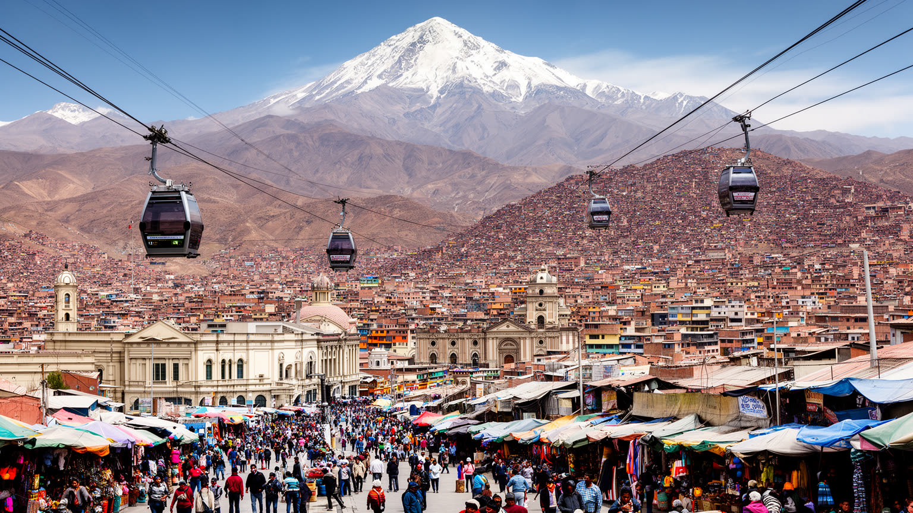
ラパスは、世界経済の巨大な金融都市とは違う形で重要な都市である。ここでは国家権力、先住民の政治、露店経済、空中交通、斜面住宅、観光、水危機が、手の届く距離で重なっている。谷底に政府があり、上の平原に人口と抗議の力があり、両者をロープウェイと市場が結ぶ構造は、近代国家の中心と周辺という単純な図式を崩す。ボリビアの資源、内陸性、海への記憶、多民族国家としての制度、都市化の負担は、ラパスの坂道と広場に現れる。都市の魅力は、山を背景にした劇的な眺めだけではなく、困難な地形の中で公共交通、市場、家族、信仰、政治参加が組み合わされている点にある。ラパスを読むことは、成長率や観光名所の数を越えて、高地で国家がどのように運営され、人びとがどのように都市を自分のものにしてきたかを読むことだ。そこに、現代都市の別の世界標準がある。大都市の価値を金融額や人口だけで測ると、ラパスの重要性は小さく見えるかもしれない。しかし、ここには気候変動、先住民の代表性、公共交通の革新、非公式経済、内陸国家の外交、住宅の不安定さが凝縮されている。ラパスは周辺の例外ではなく、二十一世紀の都市が直面する課題を高地の地形で先鋭に見せる場所である。だからこの都市を読むことは、世界都市の基準を広げることにつながる。高地の制約を創意で乗り越える姿は、都市の強さが規模だけでは測れないことを教えてくれる。